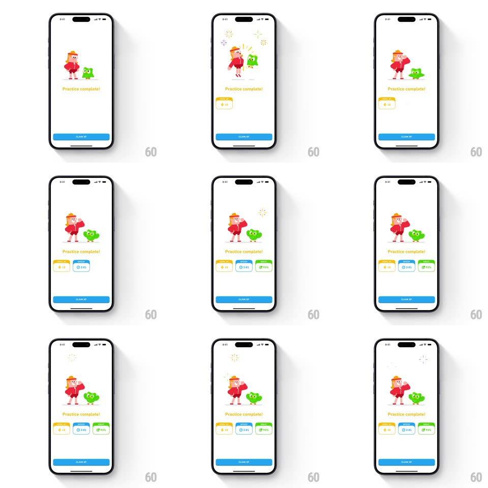

Media
Frame-by-frame

Rebuild this interaction 1:1: Duolingo's practice-complete "strong" variant - a red-jacketed character flexes beside Duo under popping sparkles, "Practice complete!" below, while the three stat cards (XP, time, accuracy) slide up in stagger and a CLAIM XP button sits at the bottom.

Rebuild this interaction 1:1: Duolingo's practice-complete "strong" variant - a red-jacketed character flexes beside Duo under popping sparkles, "Practice complete!" below, while the three stat cards (XP, time, accuracy) slide up in stagger and a CLAIM XP button sits at the bottom. ## Integration Integration: stack-agnostic spec - springs given as stiffness/damping, timed motions as duration + curve; map every value to your framework and animation library of choice. ## Scene White completion screen: a red-outfitted character striking a strong pose next to Duo, "Practice complete!" headline, three stat cards (yellow XP, blue time, green accuracy), blue CLAIM XP button. ## Motion spec Pattern: springy mascot entrance with sparkle accents and staggered cards. - The characters spring up from below (spring ~300/18, 450ms, firm overshoot) with star sparkles popping above them (scale 0 -> 1 -> 0, ~400ms each). - The character holds a flex pose with a subtle pump (bicep arm scale 1 -> 1.06 -> 1, 800ms loop); Duo bounces beside them. - Stat cards slide up in left-to-right stagger (spring ~340/22, 130ms apart), values rolling up on land. - Sparkles keep twinkling at random points around the mascots (1.5s loop). - CLAIM XP fades in last (250ms). ## Calibration - The flex is the character beat - the pose reads strength, matching the "strong" theme. - Sparkles are line-burst stars, white and yellow. ## Reduced motion Static pose fades in (250ms); cards fade staggered; no sparkles. ## Don't miss - Duo's role is supportive - the red character is the star of this variant. - The card stagger, button, and copy match the other completion variants - only the mascot tableau changes.